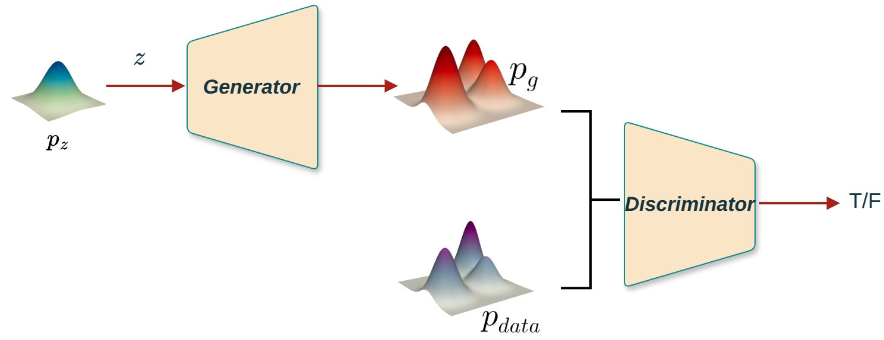
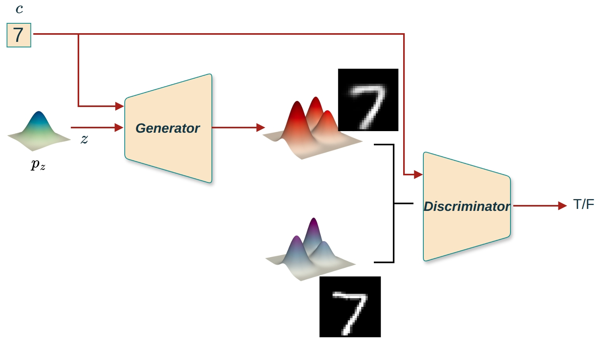

生成对抗网络（GAN）是一种强大的生成模型，它通过对抗训练让生成分布 \(p_g(x)\) 逼近真实数据分布 \(p_{data}(x)\)，从而能够生成逼真的样本。标准GAN从随机噪声 \(z \sim p_z(z)\) 生成样本，通过生成器 \(G(z)\) 学习到的分布 \(p_g(x)\) 来生成新样本。
然而，传统的GAN在处理一些需要特定条件控制的生成任务时显得力不从心。具体来说:
无法控制生成内容:标准GAN从随机噪声 \(z \sim p_z(z)\) 生成样本，生成的内容是完全随机的，无法指定生成特定类别的样本。例如，在MNIST数据集上，我们无法控制生成器生成数字“7”的图像，只能随机生成任意数字。
在图像生成任务中，我们可能希望根据特定标签（如数字“7”）来生成相应的图像，而不是随机生成一个图像。
为了增强GAN的灵活性和可控性，提出了条件生成对抗网络（Conditional Generative Adversarial Network, CGAN）。CGAN允许我们在生成过程中加入额外的信息（条件），从而实现更加精确和可控的数据生成。
核心思想:在GAN的基础上，引入条件变量 \(c\)，使得生成过程依赖于条件信息。通过指定条件变量 \(c\)（如类别标签、文本描述等）来指导模型生成特定类别的样本。
为了更好地理解GAN和CGAN的区别，我们先回顾一下标准GAN的架构:
标准GAN: - 生成器:\(G(z) \rightarrow x\)，输入随机噪声 \(z\)，输出样本 \(x\) - 判别器:\(D(x) \rightarrow [0,1]\)，输入样本 \(x\)，输出真实概率

图1 标准GAN的框架图:生成器从噪声 \(z\) 生成样本 \(x\)，判别器判断样本 \(x\) 是否真实
在CGAN中，条件变量 \(c\) 需要同时加入到生成器和判别器中，形成条件对抗。
生成器 \(G(z \vert c)\): - 输入:噪声 \(z \sim p_z(z)\) + 条件 \(c\) - 输出:以 \(c\) 为条件的假样本 \(x' = G(z \vert c)\) - 目标:生成符合条件 \(c\) 的逼真样本
判别器 \(D(x \vert c)\): - 输入:样本 \(x\) + 条件 \(c\) - 输出:该样本在给定条件 \(c\) 下为真实的概率 \(D(x \vert c) \in [0,1]\) - 目标:判断 \((x, c)\) 是否匹配（即 \(x\) 是否属于类别 \(c\)）

图2 CGAN的框架图:生成器从噪声 \(z\) 和条件 \(c\) 生成样本 \(x\)，判别器判断样本 \(x\) 在给定条件 \(c\) 下是否真实
✅ 关键:G 和 D 都“知道”当前的条件 \(c\)，形成条件对抗。这与标准GAN的区别在于，判别器不仅要判断样本是否真实，还要判断样本是否与条件匹配。
条件变量 \(c\) 通常是离散标签（如 MNIST 的 0~9），需要转换为数值向量才能输入神经网络。常见的编码方式有:
方式1:One-Hot编码（最常用） - 方法:将类别索引转换为独热向量 - 例如:类别3 → \([0, 0, 0, 1, 0, 0, 0, 0, 0, 0]\)（MNIST的10个类别） - 优点:简单直观，不需要额外参数 - 缺点:维度等于类别数，当类别数很大时维度很高；编码是固定的，无法学习
方式2:Embedding编码 - 方法:使用可学习的嵌入层将类别索引映射为低维向量 - 例如:类别3 → 可学习的N维向量 - 优点:维度可自定义，通常比one-hot更紧凑；可以学习到类别之间的语义关系 - 缺点:需要额外的可学习参数
实现示例（MNIST, 10类，One-Hot编码）:
# 生成器输入
z = torch.randn(batch_size, latent_dim) # [B, 100]
c = F.one_hot(labels, num_classes=10).float() # [B, 10]
input_g = torch.cat([z, c], dim=1) # [B, 110]
x_fake = G(input_g)
# 判别器输入
x_flat = x.view(batch_size, -1) # [B, 784]
input_d = torch.cat([x_flat, c], dim=1) # [B, 794]
output = D(input_d) # [B, 1]CGAN的核心是将无条件生成问题转化为条件生成问题。现在的问题变成:给定条件 \(c\)，判断 \(x\) 是来自真实条件分布 \(p_{data}(x|c)\) 还是生成分布 \(p_g(x|c)\)。
判别器要最大化以下对数似然:
\[L_D = \mathbb{E}_{x \sim p_{data}(x|c)} \left[ \log D(x \vert c) \right] + \mathbb{E}_{z \sim p_z(z)} \left[ \log \left(1 - D(G(z \vert c) \vert c) \right) \right]\]
其中:
📌 注意:在训练时，我们从数据集中采样 \((x, c)\) 对，条件 \(c\) 自然来自数据分布。判别器不仅要判断样本是否真实，还要判断样本是否与条件匹配。
生成器希望欺骗判别器，即让 \(D(G(z \vert c) \vert c)\) 尽可能大。
原始目标（理论形式）: \[\min_G \mathbb{E}_{z \sim p_z(z)} \left[ \log \left(1 - D(G(z \vert c) \vert c) \right) \right]\]
实践中采用非饱和版本（避免梯度消失）: \[\max_G \mathbb{E}_{z \sim p_z(z)} \left[ \log D(G(z \vert c) \vert c) \right]\]
这与标准GAN中生成器的非饱和损失形式一致，在训练早期能提供更强的梯度信号。
将两者结合，得到CGAN的标准损失函数:
\[ \min_G \max_D L(D, G) = \mathbb{E}_{x \sim p_{data}(x|c)} \left[ \log D(x \vert c) \right] + \mathbb{E}_{z \sim p_z(z)} \left[ \log \left(1 - D(G(z \vert c) \vert c) \right) \right] \tag{1} \]
🔸 对比标准GAN:只是在 \(D\) 和 \(G\) 的输入中显式加入了条件 \(c\)，并将所有分布条件化！
标准GAN的目标函数: \[\min_G \max_D L(D, G) = \mathbb{E}_{x \sim p_{data}(x)} \left[ \log D(x) \right] + \mathbb{E}_{z \sim p_z(z)} \left[ \log \left(1 - D(G(z)) \right) \right]\]
CGAN的目标函数: \[\min_G \max_D L(D, G) = \mathbb{E}_{x \sim p_{data}(x|c)} \left[ \log D(x \vert c) \right] + \mathbb{E}_{z \sim p_z(z)} \left[ \log \left(1 - D(G(z \vert c) \vert c) \right) \right]\]
可以看出，CGAN只是在标准GAN的基础上，将所有分布都条件化于 \(c\):\(p_{data}(x) \rightarrow p_{data}(x|c)\)，\(p_g(x) \rightarrow p_g(x|c)\)。
类似标准GAN，可以证明当判别器最优时:
\[D^*(x \vert c) = \frac{p_{data}(x|c)}{p_{data}(x|c) + p_g(x|c)}\]
这个结果与标准GAN类似，只是将无条件分布替换为条件分布。判别器输出的是:给定条件 \(c\)，样本 \(x\) 来自真实条件分布 \(p_{data}(x|c)\) 的概率。
将最优判别器代入目标函数后，可得:
\[L(D^*, G) = 2 \mathrm{JS}\left( p_{data}(x|c) \| p_g(x|c) \right) -2\log 2 \]
📌 结论:CGAN的训练等价于最小化条件分布 \(p_g(x|c)\) 与真实条件分布 \(p_{data}(x|c)\) 之间的期望JS散度。
当对所有条件 \(c\) 都有 \(p_g(x|c) = p_{data}(x|c)\) 时，达到全局最优。
在CGAN中，条件变量 \(c\) 起到以下关键作用:
核心思想:CGAN中条件 \(c\) 的本质作用是将无条件对抗转化为条件对抗。
在标准GAN中: - 生成器:\(G(z) \rightarrow x\)，从噪声生成样本 - 判别器:\(D(x) \rightarrow [0,1]\)，判断样本是否真实 - 对抗:生成器试图生成逼真样本，判别器试图区分真假
在CGAN中: - 生成器:\(G(z \vert c) \rightarrow x\)，从噪声和条件生成样本 - 判别器:\(D(x \vert c) \rightarrow [0,1]\)，判断样本在给定条件下是否真实 - 条件对抗:生成器试图生成与条件匹配的逼真样本，判别器试图判断样本是否真实且与条件匹配
标准GAN: \[\min_G \max_D L(D, G) = \mathbb{E}_{x \sim p_{data}(x)} [\log D(x)] + \mathbb{E}_{z \sim p_z(z)} [\log(1 - D(G(z)))]\]
CGAN: \[\min_G \max_D L(D, G) = \mathbb{E}_{x \sim p_{data}(x|c)} [\log D(x \vert c)] + \mathbb{E}_{z \sim p_z(z)} [\log(1 - D(G(z \vert c) \vert c))]\]
条件 \(c\) 将无条件分布 \(p(x)\) 分解为条件分布 \(p(x|c)\)，使得生成过程可控。